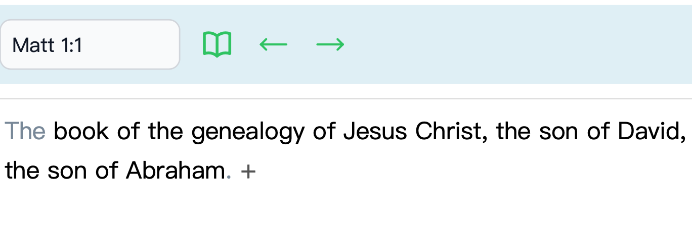
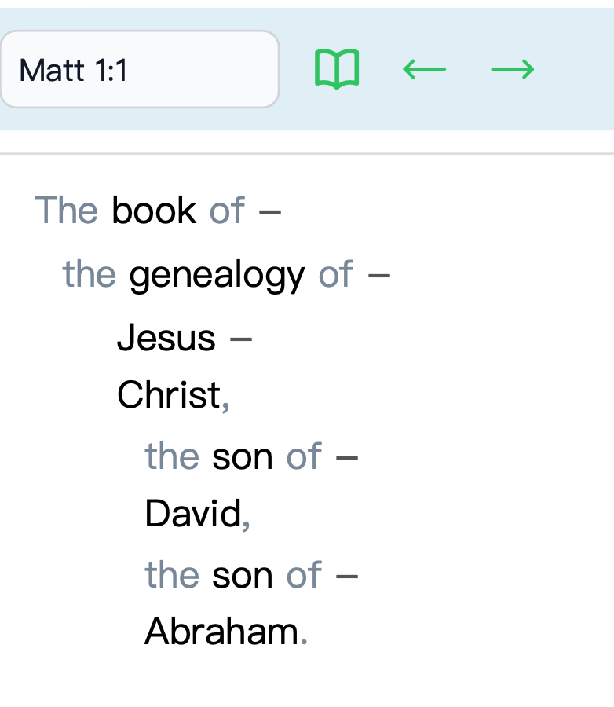
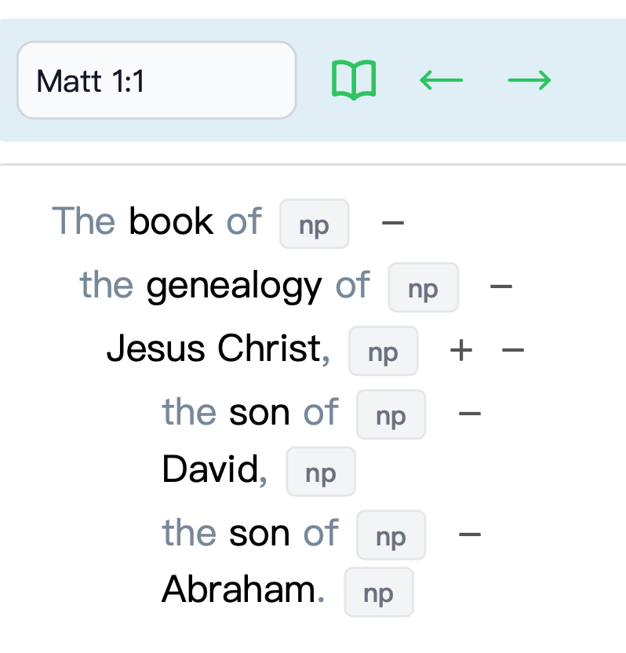
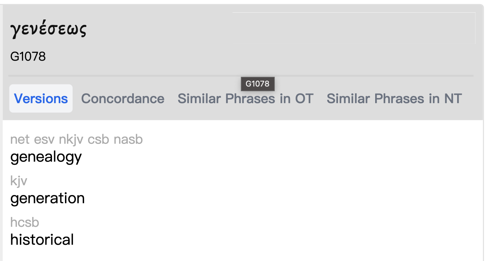
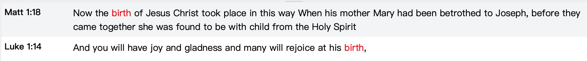
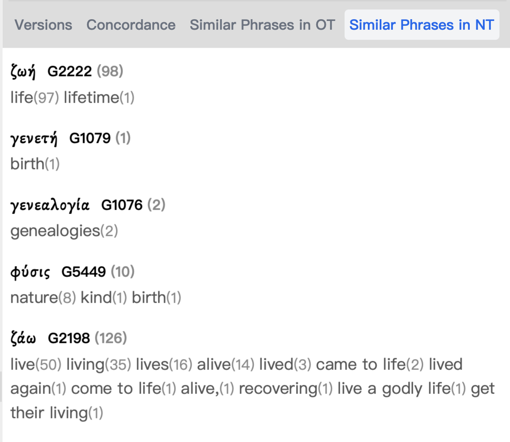

This tutorial will guide you through using the concordance web application.
Step-by-Step Guide
Step 1: Selecting A Version
When you first enter the website, you should be led to a light blue navigation bar. On the right side of the navigation bar is a toggle switch and selection menu that looks like this
Verse Select
The toggle switch turns on and off the constituent labels. This will be shown further in Step 3.
Next to the toggle switch is a dropdown navigation bar that lets you select which bible translation you want to use.
Currently there are three translation available.
English Standard Version
新标点和合本 (Chinese Translation), and
Nestle-Aland 28 (Original Greek. Only available for New Testament verses)
You're selection will determine which version is displayed.
Step 2: Selecting a Verse
On the left side of the light blue navigation bar is a section that looks like this.
Verse Select
This section lets you select the verse you want to see. You can either type in the name of the book followed by the chapter and verse, or you can use the little book icon next to it to select the verse manually.
If you choose to type in the verse, it is recommended to type in the full book name to make sure it shows up.
The arrows let you scroll through different versions
Step 3: Verse Breakdown
Once you have selected a verse, the web app will display the verse in the left hand box of the webpage. Here is an example:

Concordance Verse
You should be able to see a small plus sign (+) next to the verse that is being displayed. Keep pressing the plus sign to break down the verse into smaller subsections.

Concordance Verse Subsections
If you want to bring the parts back together, just click the minus sign (-) and it will return them to the previous iteration.
If you turn on the toggle switch from Step 1 you will see little boxes next to each subsection. This will display the constituent labels.

Toggle Constitute
Step 4: Concordance Search
Now that you have broken down the verse to your liking, you should notice that some words are greyed out and the others words aren't.
If a word isn't greyed out, click on it and a page should appear on the right hand side of the screen.

Concordance Search
Depending on the text that you select you will see a large Hebrew or Greek word/sentence, which is the original text. And the number(s) below it being reference numbers of the original text.
Below the reference number is a series of tabs that lead you to different study tools. Each tool is different depending on the word, but there are up to 4 tabs per selected text.
Versions: Display the translation of the selected text across different translations in the same language.
Concordance: This option lets you go through all verbal indexes of that word in the bible. Select a word that pops up in this section, and it will display all connecting sections in the bottom section of the webpage.

Concordance Results
Similar Phrases in OT/NT: Let's you explore through similar phrases and their references in both the New and Old Testament. Some text is only present in one section, so these options aren't always available.

Similar Phrases